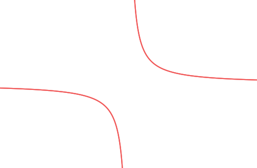
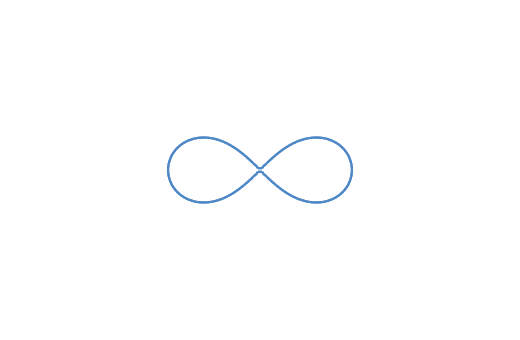
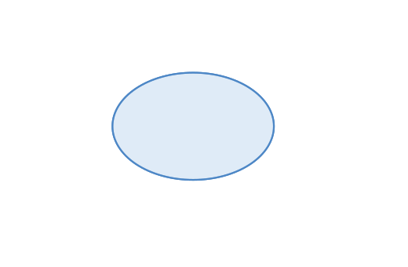
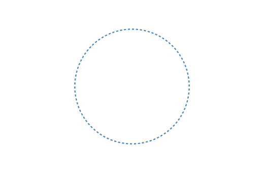
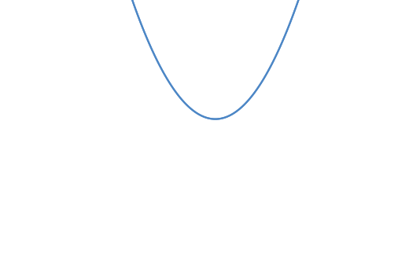
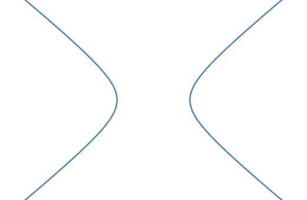
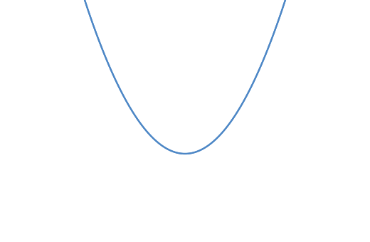
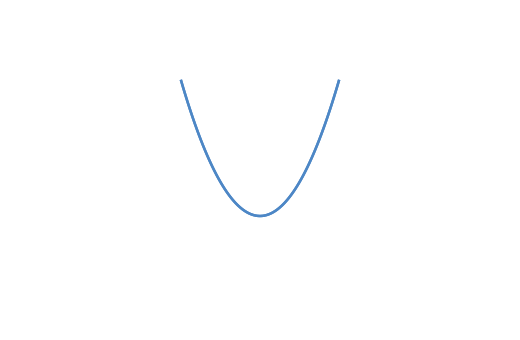
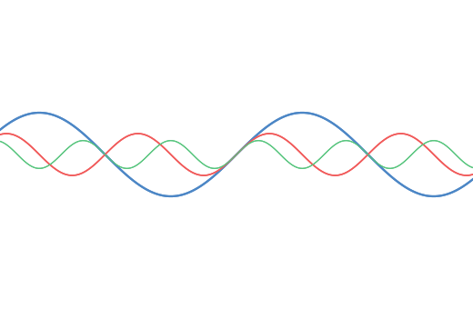
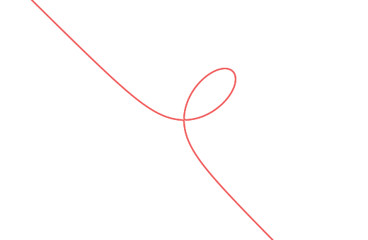

§7 · Кривые
Три полноправных типа кривых: Conic (матрица 3×3, 9 ветвей
классификации), Function (y = f(x) с sympy-парсингом
и автоматическими асимптотами), ImplicitCurve (F(x, y) = 0
через marching squares). Все читают те же ключи стилей, что и линии:
stroke, stroke_width_px, fill, z_index.
Три типа кривых
| Тип | Что представляет | Как рисуется | fill | stroke_dash_ratio |
|---|---|---|---|---|
Conic | матрица 3×3; 9 ветвей (CIRCLE, ELLIPSE, PARABOLA, HYPERBOLA, 3× lines, POINT, EMPTY) | manim-примитив для замкнутых; адаптивный sampler + viewport-clip для парабол/гипербол | только CIRCLE, ELLIPSE | только CIRCLE |
Function | явная y = f(x), sympy + numpy.lambdify | adaptive sampling с разделением по natural_singularities | — | — |
ImplicitCurve | любое F(x, y) = 0 | marching squares 128×128 внутри viewport | — | — |
style.curve.* не существует). Они читают canonical defaults
через resolver (defaults.function, defaults.conic и
т.п.) и перекрываются per-element через elem.style, как обычные
линии.




Conic — конические сечения
Создание
| Конструктор | Когда используется |
|---|---|
Conic(matrix) | Сырой 3×3 ndarray — продвинутый случай. |
Conic.from_coeffs(a, b, c, d, e, f) | По общему уравнению ax² + bxy + cy² + dx + ey + f = 0. |
Conic.from_ggb_matrix(A0..A5) | Совместимо с GGB XML <matrix>. |
Conic("...") / Conic.from_string(eq) | DSL: произвольное уравнение, парсится через sympy. |
В DSL поддерживается строковая форма:
g1 = Conic("x^2 + y^2 = 4") # → CIRCLE
g2 = Conic("(x+1)^2/4 + y^2/2 = 1") # → ELLIPSE
g3 = Conic("y = (x - 0.3)^2") # → PARABOLA
g4 = Conic("x^2/2 - y^2 = 1") # → HYPERBOLA
g5 = Conic("x^2 - y^2 = 0") # → INTERSECTING_LINESТип классифицируется лениво при первом обращении к
conic.type — по инвариантам ранга матрицы и знака
det(M₃₃). Кэшируется.
Эллипс: fill поддерживается
ell = Conic("(x+0.3)^2 / 5 + (y-0.2)^2 / 2.2 = 1")
ell.style.fill = '#d6e5f6'
ell.style.fill_opacity = 0.55
ell.style.stroke = '#4d87c6'
ell.style.stroke_width_px = 2.2
Окружность: поддерживает stroke_dash_ratio
Для CIRCLE-ветви рендер использует DashedVMobject,
поэтому работает пунктир — в отличие от остальных коник.
c = Conic("x^2 + y^2 = 6")
c.style.stroke = '#4d87c6'
c.style.stroke_width_px = 2.0
c.style.stroke_dash_ratio = 0.5
stroke_dash_ratio работает только для
CIRCLE-ветви Conic (через DashedVMobject).
Parabola/Hyperbola рендерятся как polylines VMobject-ом напрямую — этот
путь не применяет dash. То же касается Function и ImplicitCurve.
Парабола: viewport-clipping
Парабола бесконечна. Чтобы sampler не тратил точки на невидимые
участки, аналитически вычисляется диапазон параметра |u| ≤ 2√(p·v_max),
где v_max — максимальная проекция оси на видимую область
(viewport_t_ranges_parabola в geo/curve_sampling.py).
parab = Conic("y - 0.4 = (x - 0.3)^2 / 1.6")
parab.style.stroke = '#4d87c6'
parab.style.stroke_width_px = 2.2
Гипербола: две ветви, каждая независимо
Для HYPERBOLA рендер строит две ветви (sign = ±1),
для каждой аналитически сужает диапазон параметра до пересечения с viewport
(|t| ≤ min(acosh(u_max/a), asinh(v_max/b))), затем вызывает
sample_parametric.
hyp = Conic("x^2 / 1.8 - y^2 / 1.2 = 1")
hyp.style.stroke = '#4d87c6'
hyp.style.stroke_width_px = 2.2
Вырожденные коники
INTERSECTING_LINES, PARALLEL_LINES,
DOUBLE_LINE раскладываются на обычные Line-объекты,
обрезанные viewport'ом. POINT становится Dot.
EMPTY не рисует ничего.
Производные свойства коник
На базе Conic доступны команды:
O = Center(ell) # центр
F1 = Focus(hyp) # первый фокус
V = Vertex(parab) # вершина
d = Directrix(parab) # директриса (Line)
e = Eccentricity(hyp) # эксцентриситет (число)
pol = Polar(P, conic) # поляра точки
tg = Tangent(P, conic) # касательная из внешней точкиСтилизация этих элементов — по их типу (Line/Point), см. §3.
Function — явные y = f(x)
Парсинг
Три эквивалентных способа создать функцию:
# 1. Строковая форма — парсится sympy
f1 = Function("y = x^2 - 3")
# 2. DSL-сугар: f(x) = expr
# (preprocessor переписывает в Function("y = ..."))
f2(x) = x^2 - 3
# 3. Любое имя переменной — переименование автоматическое
f3(t) = sin(t) / tПарсер поддерживает:
^→**(возведение в степень по-школьному);- Unicode-компараторы:
≤→<=,≥→>=; - Цепочки сравнений:
-1 ≤ x ≤ 1→(x ≥ -1) & (x ≤ 1); - GGB-конструкция
If[cond, then, else]→sympy.Piecewiseрекурсивно; abs(x)и стандартные функции numpy/sympy.
После парсинга выражение один раз пропускается через
sympy.lambdify('numpy'); дальше горячий путь — только numpy-вызовы,
без sympy.
Базовый случай
f(x) = x^2 / 2 - 1
f.style.stroke = '#4d87c6'
f.style.stroke_width_px = 2.2
Асимптоты — автоматическое расщепление
y = 1/x имеет вертикальную асимптоту в x = 0.
sympy.singularities находит все такие точки и сохраняет в
func.natural_singularities. Рендер делит x-диапазон на подотрезки
между соседними singularities, каждый сэмплируется независимо — никакой
«соединяющей» линии через бесконечность.
f(x) = 1 / x
f.style.stroke = '#f15b5b'
f.style.stroke_width_px = 2.2
f в самой singularity — отступает
на ε = max(width × 1e-3, 1e-6), чтобы избежать
ZeroDivisionError. У асимптот кривая визуально обрывается
немного раньше теоретической бесконечности — обычно невидимо, но может
проявиться при очень высоком zoom.
Piecewise через If[...]
GGB-синтаксис If[-2 ≤ x ≤ 2, x² - 1] переводится в
sympy.Piecewise((x² - 1, (x ≥ -2) & (x ≤ 2)), (nan, True)).
Вне области — NaN, sampler обрывает полилинию.
f(x) = If[-2 <= x <= 2, x^2 - 1]
f.style.stroke = '#4d87c6'
f.style.stroke_width_px = 2.5
domain=(a, b) прямо в конструктор:
from animageo.geo.lib_function import Function
f = Function('x**2 - 1', domain=(-2, 2))Function(...) через putCode не принимает kwargs —
для DSL используйте If[...].
Несколько функций, разные стили
f(x) = sin(x)
g(x) = sin(2 * x) / 2
h(x) = sin(3 * x) / 3
f.style.stroke = '#4d87c6'
f.style.stroke_width_px = 2.2
g.style.stroke = '#f15b5b'
g.style.stroke_width_px = 1.6
h.style.stroke = '#58c57e'
h.style.stroke_width_px = 1.2
ImplicitCurve — F(x, y) = 0
Когда нужно
Если кривая не раскрывается как y = f(x) (лемниската,
декартов лист, кардиоида) и sympy-классификация не даёт ветви Conic —
используется ImplicitCurve. Уравнения вида LHS = RHS
нормализуются в LHS − RHS = 0 автоматически.
L = ImplicitCurve("(x^2 + y^2)^2 = 4 * (x^2 - y^2)") # лемниската
F = ImplicitCurve("x^3 + y^3 = 3 * x * y") # декартов лист
S = ImplicitCurve("sin(x) + cos(y) = 0.5") # периодический паттернMarching squares
Рендер строит сетку 128×128 внутри viewport, для каждой ячейки
смотрит знаки F в 4 углах, по 16-позиционной таблице
восстанавливает отрезок контура. Сложность O(grid_n²),
память константна. Это значит:
- Нет адаптивности к локальной кривизне — на 128×128 у очень гладких кривых можно заметить едва видимое «ступенчатое» пересечение диагоналей ячеек.
- Самопересечения (фолиум в начале координат) нативно корректны — они дают две пересекающиеся пары отрезков.
- Области, где
F→ NaN (sqrt(-y)приy > 0), пропускаются автоматически.
L = ImplicitCurve("(x^2 + y^2)^2 = 4 * (x^2 - y^2)")
L.style.stroke = '#4d87c6'
L.style.stroke_width_px = 2.2
F = ImplicitCurve("x^3 + y^3 = 3 * x * y")
F.style.stroke = '#f15b5b'
F.style.stroke_width_px = 2.0
Стилевые ключи
Рендер читает тот же набор ключей, что у линий. Дефолты — из
StyleConfig + resolver:
| Ключ | Тип | Default | Применим к | Эффект |
|---|---|---|---|---|
stroke | hex | defaults.<type>.stroke | все | цвет кривой |
stroke_width_px | float (px) | defaults.<type>.stroke_width_px | все | толщина; рендер: × 100 / ptUnit |
stroke_opacity | 0..1 | 1 | все | прозрачность |
stroke_linecap | enum | rendering.line_cap | все | butt/round/square |
stroke_dash_ratio | 0..1 | None | только CIRCLE-ветвь Conic | пунктир через DashedVMobject |
fill | hex | style.background | только CIRCLE / ELLIPSE | цвет заливки |
fill_opacity | 0..1 | 1 | только CIRCLE / ELLIPSE | прозрачность заливки |
z_index | float | Z_LINE = 4 | все | перекрывает автоматику |
| подпись | см. §6 | — | все | label_visible, label_text, label_color, font_size_px, label_offset_px |
sample_count, max_samples, grid_n,
segment_mu — это глобальные constants в
geo/curve_sampling.py. Для большей детализации — уменьшайте
px_size / ptUnit (segment_mu станет
меньше пропорционально) либо правьте модуль.
Параметры сэмплирования
Все значения фиксированы в коде. Приведены для справки.
| Параметр | Значение | Где используется | Назначение |
|---|---|---|---|
segment_mu | 3.0 / ptUnit | Conic (parabola, hyperbola), Function | цель адаптивного sampler'a: ≈3 px между соседними точками polyline |
initial_samples | 32 | sample_parametric | стартовая равномерная сетка по t |
max_samples | 500 | sample_parametric | жёсткий cap — защита от зависаний на патологических кривых |
grid_n | 128 | ImplicitCurve | сетка 128×128 ≈ 16K ячеек |
viewport_pad | 0.1 MU | Liang–Barsky | паддинг, чтобы stroke-cap не попал на край кадра |
ε у асимптоты | max(width × 1e-3, 1e-6) | Function | отступ от singularity при сэмплировании |
Особенности рендера
DashedVMobject. Для пунктирной функции — разрезать на
чередующиеся куски через If[...] или использовать
ImplicitCurve с периодическим F.
compute_label_layout в label_placement.py знает
только о точках, сегментах, окружностях, углах. Conic / Function /
ImplicitCurve — невидимые для решателя препятствия. В сценах с кривыми
лучше отключать автораскладку или фиксировать подписи через
label_placement_locked=True.
segment_mu ≈ 3 px), поэтому под zoom
качество сохраняется.
Intersect(curve1, curve2) диспатчится через
intersect_FK, intersect_Il, intersect_II
и т.д. — аналитика там, где возможно (Conic ∩ Line: квадратное уравнение;
Conic ∩ Conic: пенсил-метод); numeric fallback (brentq + fsolve Newton)
для функций и неявных. Результат — обычные Point-элементы.